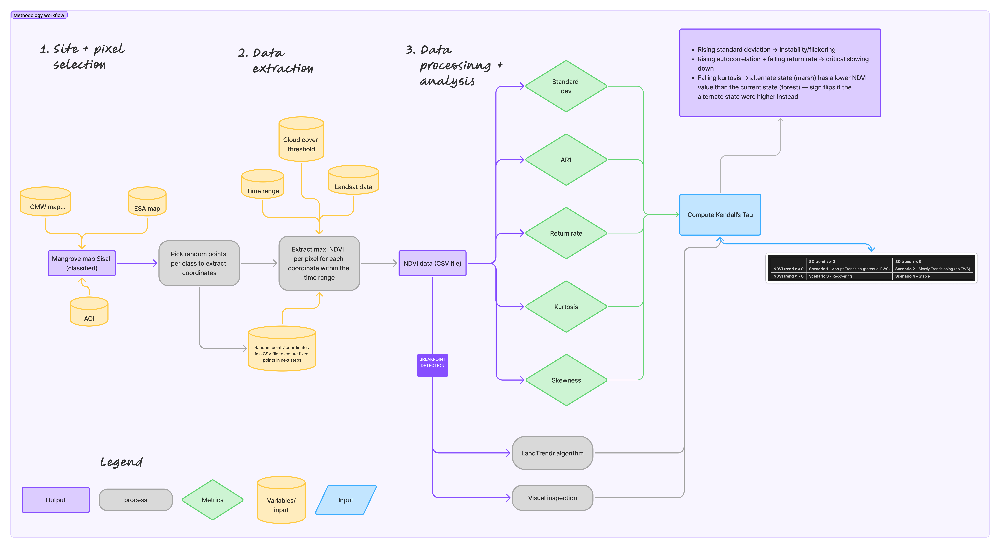

How the findings on the Research tab were produced, and how to run the same analysis yourself in Google Earth Engine.
Points are sampled from three change masks derived from the classified mangrove map of the Sisal AOI: a gain mask, a loss mask, and a loss-then-recovery mask, combining the Global Mangrove Watch product with ESA land cover data. Random point coordinates are fixed in a CSV so repeat runs use the same points.
Landsat imagery is filtered by a cloud cover threshold and the study time range. Maximum NDVI per interval is extracted for each coordinate. ERA5 climatology (temperature, precipitation, salinity, evapotranspiration) is extracted for the same coordinates.
Five metrics are computed on the NDVI series: standard deviation, AR1, return rate, kurtosis, and skewness. Kendall's tau is computed on the trend of each metric, and separately on the trend of NDVI itself. Breakpoint detection (LandTrendr) is cross-checked against visual inspection of the NDVI curve.
Each point is classified by crossing the trend of NDVI itself against the trend of NDVI's standard deviation, both tested with Kendall's tau. LandTrendr's breakpoint detection and a visual check of the curve confirm or refine which scenario applies. This is independent of the gain/loss/recovery class, which instead reflects which change mask the point was originally sampled from.

Run this same analysis on your own coordinate. The steps below match the pipeline above; the script covers steps 1–3.
// Sisal mangrove NDVI extraction — starter script
// 1. Define your point (swap in your own coordinates)
var point = ee.Geometry.Point([-90.033, 21.161]);
// 2. Build a cloud-masked Landsat surface reflectance collection, 1984-present
function maskClouds(img) {
var qa = img.select('QA_PIXEL');
var cloud = qa.bitwiseAnd(1 << 3).eq(0).and(qa.bitwiseAnd(1 << 4).eq(0));
return img.updateMask(cloud);
}
var landsat = ee.ImageCollection('LANDSAT/LC08/C02/T1_L2')
.merge(ee.ImageCollection('LANDSAT/LE07/C02/T1_L2'))
.merge(ee.ImageCollection('LANDSAT/LT05/C02/T1_L2'))
.filterBounds(point)
.filterDate('1984-01-01', '2026-12-31')
.map(maskClouds);
// 3. Compute NDVI per image (band names vary slightly by sensor)
function addNDVI(img) {
var ndvi = img.normalizedDifference(['SR_B5', 'SR_B4']).rename('NDVI');
return img.addBands(ndvi);
}
var withNDVI = landsat.map(addNDVI);
// 4. Extract the NDVI time series at the point and export to CSV
var series = withNDVI.select('NDVI').getRegion(point, 30);
Export.table.toDrive({
collection: ee.FeatureCollection(
ee.List(series).slice(1).map(function (row) {
row = ee.List(row);
return ee.Feature(null, { date: row.get(3), ndvi: row.get(4) });
})
),
description: 'sisal_point_ndvi',
fileFormat: 'CSV'
});
// Pull the CSV into Python or R for the remaining steps: standard
// deviation, AR1, return rate, kurtosis, skewness, and Kendall's tau.